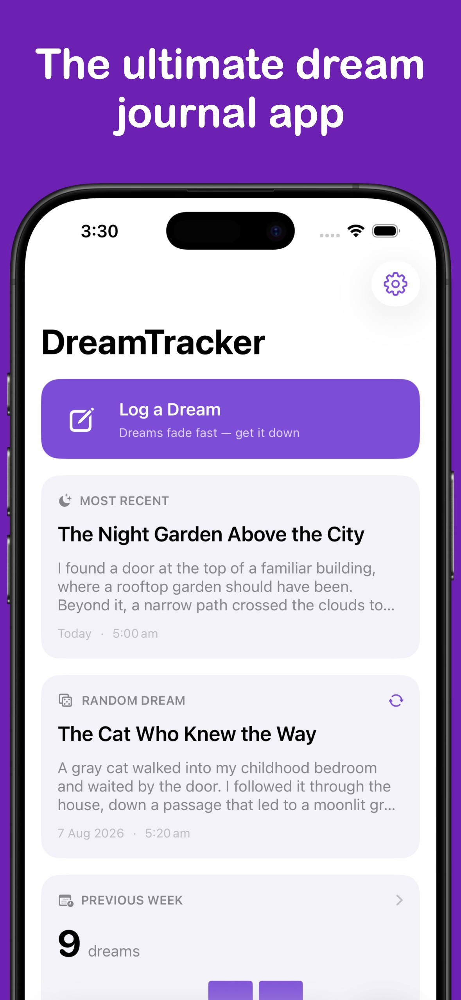
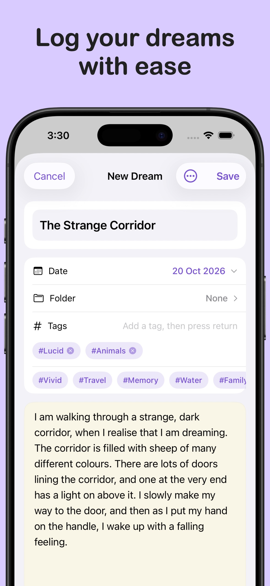
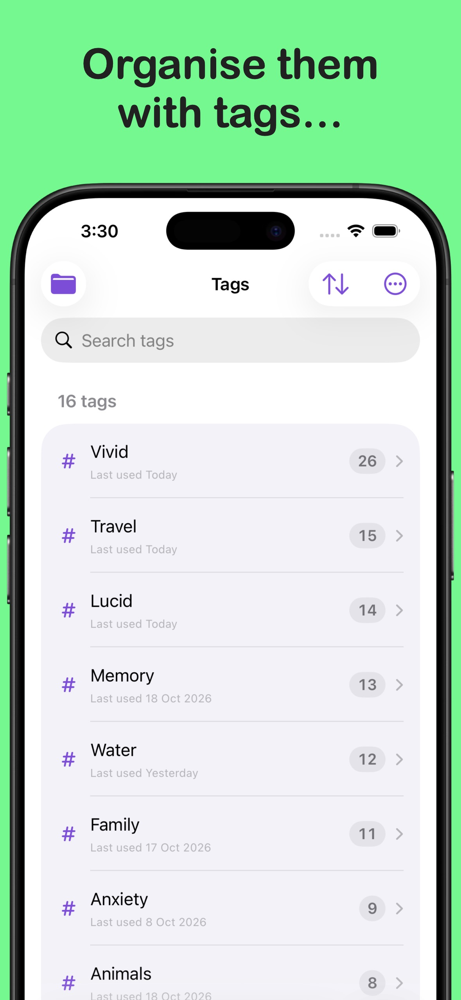
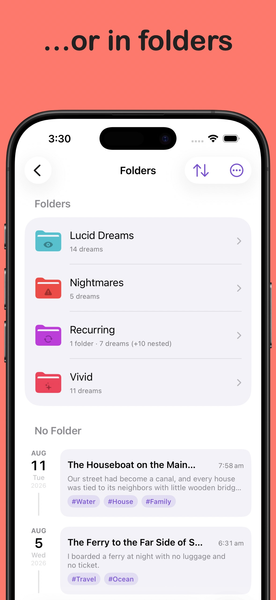
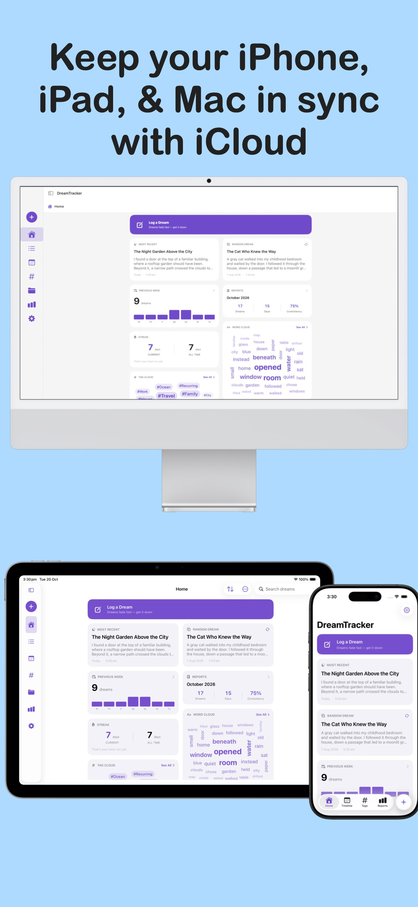
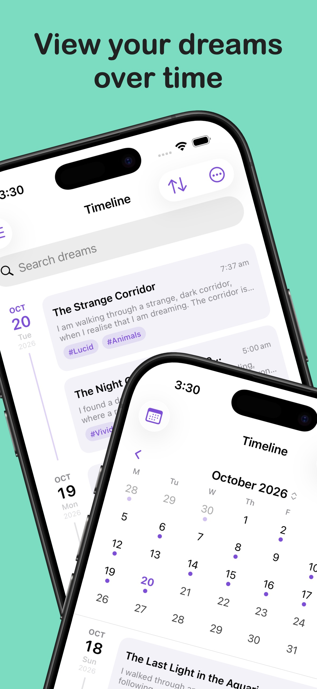
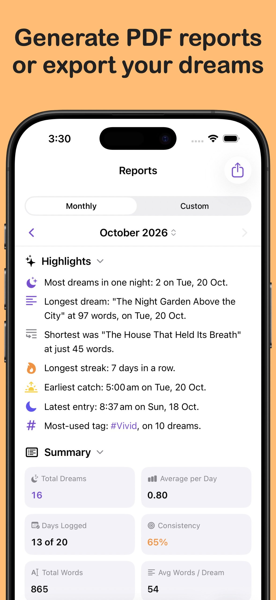
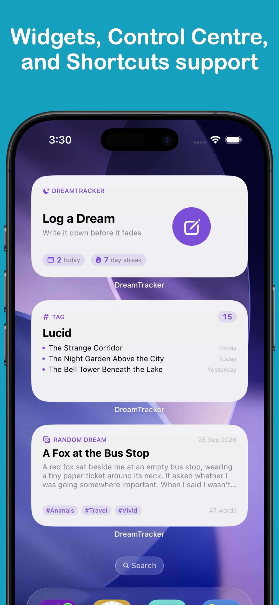

DreamTracker
Remember and organise your dreams.
Capture the dreams you wake with, organise them in your own journal, and return to them whenever you want.
Download from the App Store today
iOS
iPad
Mac








Features
- Write while it’s freshRecord a dream with a title, a date and time, and a richly formatted note. Add to it or edit it later as more details come back.
- Tags and foldersGroup dreams by theme with tags, and keep your journal organised with folders and nested folders.
- Search your journalFind an entry by its title or words in the dream, then open it alongside its tags and folder.
- Calendar and timelineBrowse dreams by date in a calendar or a day-by-day timeline, and sort the list to suit the way you look back.
- Reports and patternsSee how often you record dreams, how your entries change over time, and other stats with exportable reports.
- Optional Apple Health sleep dataAllow DreamTracker to read sleep data from Apple Health to show sleep details with your dream entries and support after-sleep reminders.
- Optional iCloud syncTurn on iCloud sync to keep dreams, tags, folders, and preferences up to date across your devices.
- PrivacyDreamTracker lets you add a lock to the app, so that no one can get in without the code, or biometrics. You can even hide dreams from normal view or the random pool.
- Widgets and Apple ShortcutsBring a Random Dream, a chosen tag or folder, or a quick journal action closer with Home Screen and Lock Screen widgets, and Shortcuts.
- Import and exportExport dreams as plain text, Markdown, CSV, or JSON. Import from your favourite note apps, or restore a complete DreamTracker JSON backup as well.
DreamTracker Pro
- Custom dream backgroundsChoose from more background styles, or make a personal solid colour, gradient, or photo background for your dream text.
- More fontsChoose additional typefaces for reading and writing dreams, and for sharing them.
- Custom app iconsChoose from a range of icon styles and colours for your Home Screen.
- Tab bar and sidebar customisationChoose which sections appear in the tab bar and arrange them around the way you use DreamTracker.
More from LifeTracker Studio
VitaminTracker
Stay on top of your vitamins and nutrients.
View app →WaterTracker
Track your daily water intake and stay hydrated.
View app →HabitTracker
Build lasting habits and track your daily routines.
View app →WeightTracker
Set goals and achieve your target weight.
View app →FitnessTracker
Schedule and record your workouts with ease.
View app →ProteinTracker
Make hitting your protein targets a breeze.
View app →